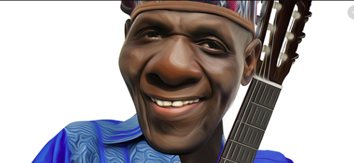
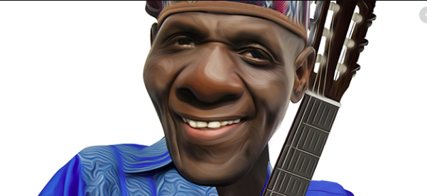

The Oliver Mutukudzi Band (The black Spirits Band)
In the period leading to Zimbabwe’s 1980 independence, Oliver’s music was a mix of the revolutionary jam songs with undertones targeting the repressive Rhodesian regime. Yet he also composed the day-to-day social context music about life and the essence of ubantu (humanity). “Before independence, it was the fight against the Rhodesian regime. My music then spoke against oppression and the repressive regime and how we were suffering at the hands of the regime. I left school and for three years I couldn’t find a job, yet I was one of the few guys among my peers with a fine secondary education. But I couldn’t get a job because I was black. My music then helped people identify themselves…who we were and what we wanted to be.”
In all his music in pre-independence, Oliver never took on the Rhodesian regime head-on, preferring the power of metaphor to communicate meaning. “I wasn’t afraid of anyone. The beauty of the Shona language [the majority vernacular language in Zimbabwe] is that it is endowed with all those rich idioms and metaphor… and the beauty of art is that you can use the power of language to craft particular meaning without necessarily giving it away. So, I used the beauty of Shona to communicate in my own way and people got the message. To this day, Oliver incorporates the aspect of self-discipline and tolerance in his repertoires. He is emotional about the socio-cultural norms and principles that govern the Shona traditional way of life, particularly the respect for the next person.